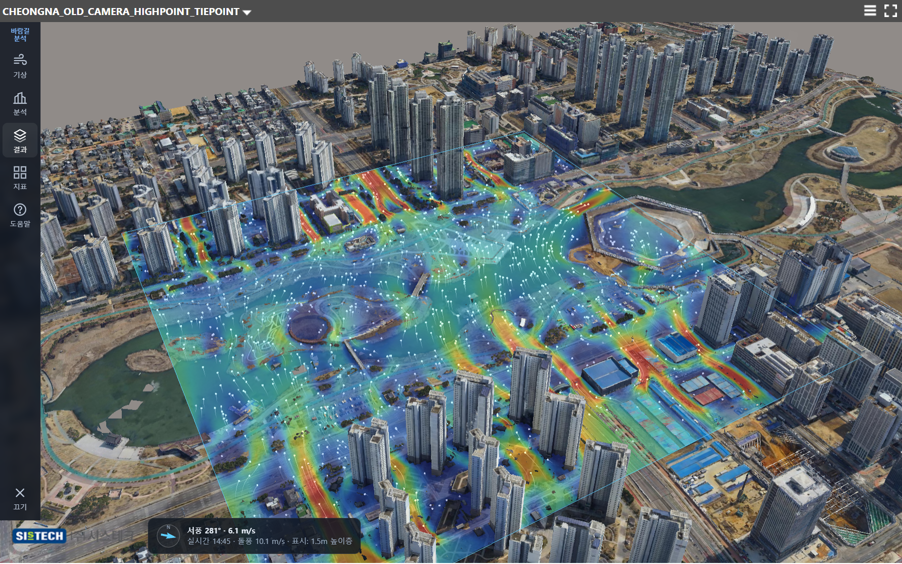
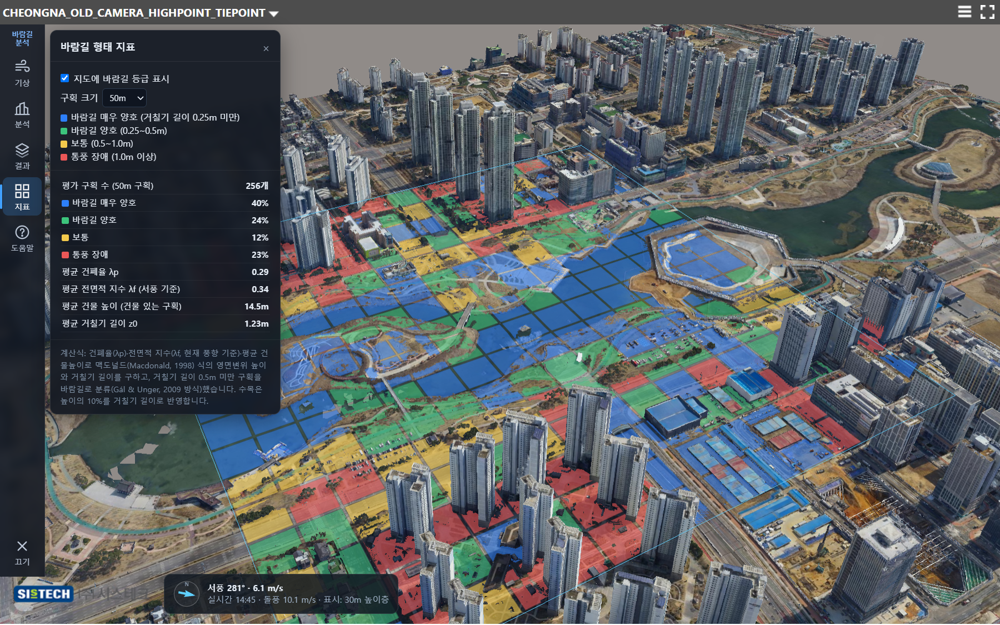

사진측량 메시모델(건물·수목·지형·수면)을 그대로 반영해 높이층별 바람 흐름과 바람길 등급을 계산합니다. 실시간 기상 자료를 자동으로 불러옵니다.


북마크 설정 없이 링크만 열면 청라 3차원 모델과 바람길 분석이 바로 실행됩니다. 휴대폰에서도 열립니다.
청라 바람길 분석 바로 열기사진측량 메시를 약 0.8m 간격 높이 지도와 정사영상으로 변환한 독립 페이지입니다. 원본 메시 그대로 분석하려면 아래 방법을 쓰세요.
방법 A. 북마크를 직접 만들기: 북마크바에서 오른쪽 클릭 → 페이지 추가 → 이름은 "바람길 분석 켜기", 주소(URL)에 아래 코드를 붙여 넣기
방법 B. 개발자 도구 사용: 뷰어에서 F12 → Console(콘솔) 탭에 아래 한 줄을 붙여 넣고 Enter
| 기상 | 오픈메테오 실시간 바람(10분 갱신) 또는 24시간 예보 시각 선택, 직접 풍향·풍속 지정 |
| 분석 범위 | 화면 중심 300m~1.2km 정사각형 또는 3D 모델 위에 직접 그린 영역 |
| 높이층 | 1.5m(보행자)·10m·30m·60m·100m 중 여러 개 동시 계산. 각 높이에서 실제 메시 단면으로 건물·수목 판정 |
| 계산 | 높이층별 2차원 격자 볼츠만 흐름 계산(난류 모형, 상층 공기 혼합 반영), 수목은 일부 통과(항력)로 처리, 호수·수로 자동 인식 |
| 결과 표시 | 풍속비 색상면, 흐르는 바람 입자, 마우스 지점 풍속·풍향, 정체·약풍·양호·강풍 면적 통계 |
| 형태 지표 | 구획별 건폐율·전면적 지수·거칠기 길이(Macdonald 식)로 바람길 4등급 지도 |
| 저장 | 결과 표(CSV), 화면 이미지(PNG) |
참고: 위에서 내려다본 높이 지도 기반 근사 해석이라 다리·필로티 아래 흐름은 표현되지 않으며, 정밀 전산유체해석(CFD)을 대신하지는 않습니다.
뷰어 서버의 CHEONGNA_01/App/index.html 의 <head> 안에 아래 한 줄을 추가하면, 뷰어 주소만 공유해도 모든 사용자에게 바람길 분석 메뉴가 자동으로 나타납니다.